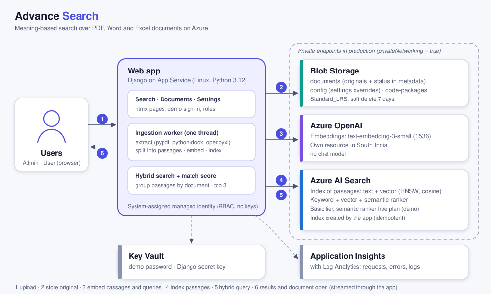

What gets deployed
Ten resources, in the order deploy.sh creates them. Each has its own template, so you can redeploy any one on its own.
| # | Resource | What it does | Configuration | Template |
|---|---|---|---|---|
| 1 | Key Vault | Holds every secret the stack generates | Standard tier, soft-delete on, purge protection off | 01-keyvault.json |
| 2 | Storage Account | Document store and backup target | StorageV2, LRS, Hot; documents container, backupshare file share | 02-storage.json |
| 3 | Log Analytics and Application Insights | Logs and application telemetry | Workspace-based; 30-day and 90-day retention | 03-monitor.json |
| 4 | App Service | Hosts the Django application | P1v2 Linux plan, Python 3.12, system-assigned identity | 04-appservice.json |
| 5 | Cosmos DB | Structured application data | NoSQL API, 100 RU/s, single region, periodic backup | 05-cosmosdb.json |
| 6 | Azure AI Search | Indexing and ranked retrieval with similarity scores | Standard S1, 1 replica, 1 partition (shown as "Foundry IQ" on cost sheets) | 06-search.json |
| 7 | Azure Functions | Background and async processing | Consumption plan, Linux and Python, shares the Storage Account | 07-functions.json |
| 8 | Azure OpenAI embeddings | Vectorizes documents and queries | text-embedding-3-large in East US 2, same resource group | 09-embedding.json |
| 9 | Recovery Services Vault | Backs up the backupshare file share | Daily backup policy | 08-backup.json |
| 10 | Defender for Cloud | Subscription-wide protection plans | Asks for confirmation first, because it affects the whole subscription | 09-defender.json |
No resources match that filter. Clear the box to see all ten.
How it fits together
Django on App Service queries Azure AI Search, which uses an Azure OpenAI embedding model to turn text into vectors. Results come back ranked with similarity scores. There is no chat model and no generated answers.

Deploy it
You need an Azure subscription with Contributor access, the Azure CLI, jq, and Bash (use WSL or Git Bash on Windows).
- Clone the repository
git clone https://github.com/TTNS-Deployments/Advance_Search.git cd Advance_Search
- Sign in and pick the subscription
az login az account set --subscription "<subscription-id-or-name>"
- Check the defaults at the top of
deploy.shResource grouprg-advsearch-dev, regioncentralindia, embeddings ineastus2, prefixadvsearch, environmentdev. Change them if you need different names or regions. - Run the script
chmod +x deploy.sh ./deploy.sh
A full run takes about 10 to 20 minutes. - Answer the Defender prompt
Resources 1 to 9 deploy on their own. Step 10 asks before it changes security settings for the whole subscription; answer
yto enable it ornto skip. - Deploy your app and connect the index Publish the Django code to the App Service, then point the AI Search vectorizer at the embedding deployment. The summary at the end of the run lists every name and the Key Vault secrets.
Good to know
Cost
The P1v2 App Service plan and the S1 AI Search service make up most of the bill, and both charge continuously whether or not anyone uses them.
Regions
Everything runs in Central India except the embedding model, which is in East US 2 because its availability in Central India was not confirmed.
Secrets
Keys and connection strings go into Key Vault, and the web app and Functions read them through Key Vault references instead of plaintext settings.
Tear down
az group delete --name rg-advsearch-dev --yes --no-wait removes steps 1 to 9. Defender plans are subscription-wide and must be reset separately.